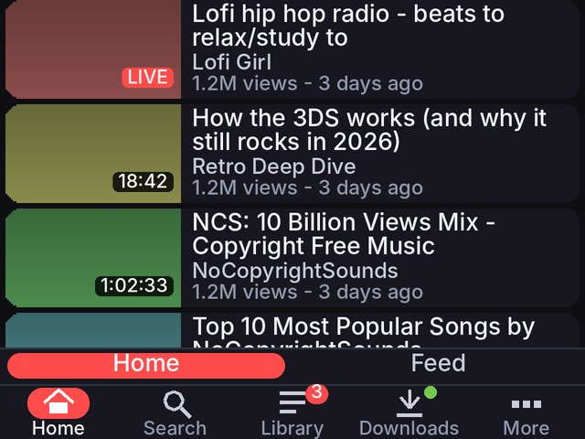
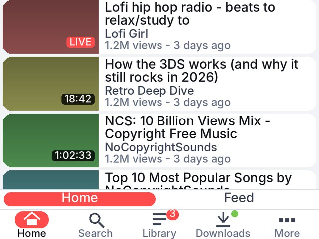
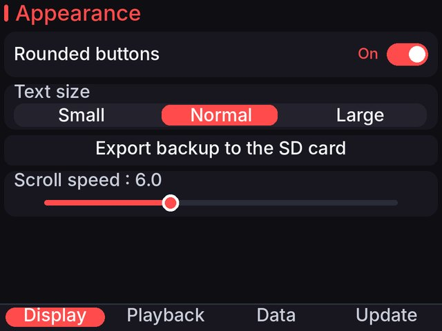
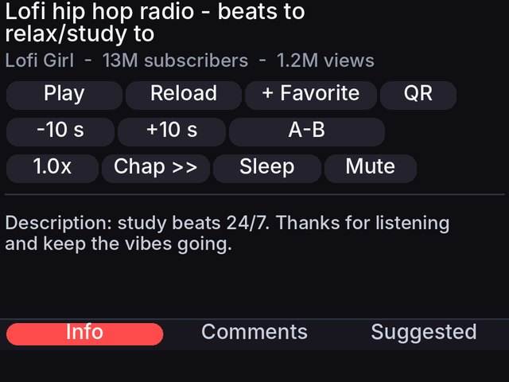
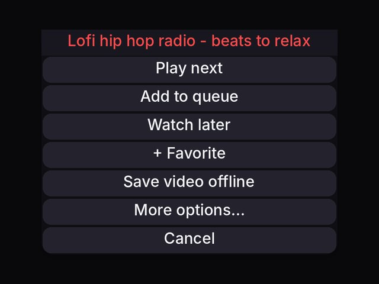
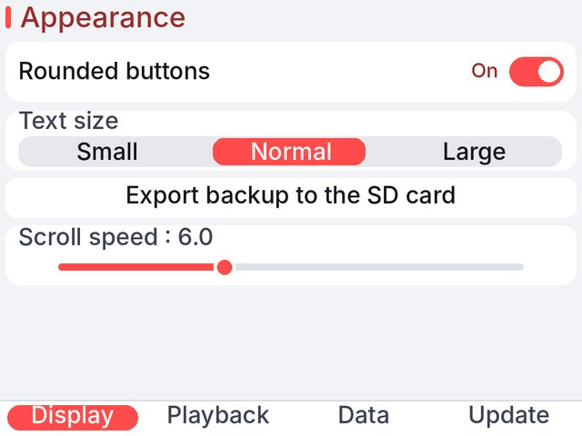

Search and watch
Filters, suggestions, Shorts, live streams and chat, subtitles, SponsorBlock.
You are offline. Saved data is shown when available.
Homebrew for Nintendo 3DS / 2DS
Search, watch, download and use your account, all on the console.
Download .cia Download .3dsx All versions
Latest stable release: loading...
IkersTube.cia to your SD card (for example into sdmc:/cias/).IkersTube.3dsx to sdmc:/3ds/ on your SD card.sdmc:/3ds/dspfirm.cdc.sdmc:/3ds/IkersTube/.Filters, suggestions, Shorts, live streams and chat, subtitles, SponsorBlock.
Sign in for subscriptions, likes, playlists, history and comments.
Save videos or audio, queue, favorites and watch later.
Skip intro, go to a time, loop a chapter, speed, sleep timer with fade.
Data saver, rounded themes, QR codes for links, bookmarks, backups.
Safe mode after a crash, bounded downloads and a crash report you can share.
A new design for the whole app: rounded cards, switches, a new bottom bar and light and dark themes. These are renders of the real interface code with sample data, not photos of a console.






Every version, loaded live from GitHub. Download it or scan the QR with FBI.
Plans can change. Items move between columns as work goes on.
Something broke? Here is how to get it fixed quickly.
Open an issue on GitHub and tell us what you were doing, your console (3DS, 2DS, New 3DS...), its firmware and the app version (stable or devbuild).
After a crash the app starts in safe mode on the next launch and resets its settings so it can open again. That is expected. Report the crash before you carry on.
Attach crash.txt and log.txt from sdmc:/3ds/IkersTube/ on the SD card. Read them first: issues on GitHub are public.
A Nintendo 3DS / 2DS family console with custom firmware (homebrew), and FBI or the Homebrew Launcher.
Stable releases are installed by the in-app updater. Devbuilds are test builds that the app only offers; they may be unstable. Only the newest 15 devbuilds of each version are kept.
Dump the DSP firmware to sdmc:/3ds/dspfirm.cdc (for example with DSP1).
It enters safe mode on the next launch and resets its settings. Please open an issue and attach crash.txt / log.txt from sdmc:/3ds/IkersTube/.
No. You can search and watch without one. Signing in adds your subscriptions, likes, playlists, history and comments.
No. It is a fan project, not affiliated with YouTube, Google or Nintendo.
It checks GitHub at start. In Settings > Update you can check by hand. You can also scan the QR on this site with FBI (Remote Install > Scan QR code).
144p, 240p, 360p and 480p, plus an audio-only mode. The New 3DS family plays up to 480p; the old 3DS family only the low ones. Pick one in the Playback tab of the player.
Videos with dubbed audio list their tracks in the player tool "Audio language". If YouTube does not answer, tap it again.
Everything lives in sdmc:/3ds/IkersTube/. Settings > Data can export a backup to the SD card and restore it.
Yes: saved videos and audio play from the SD card without internet.